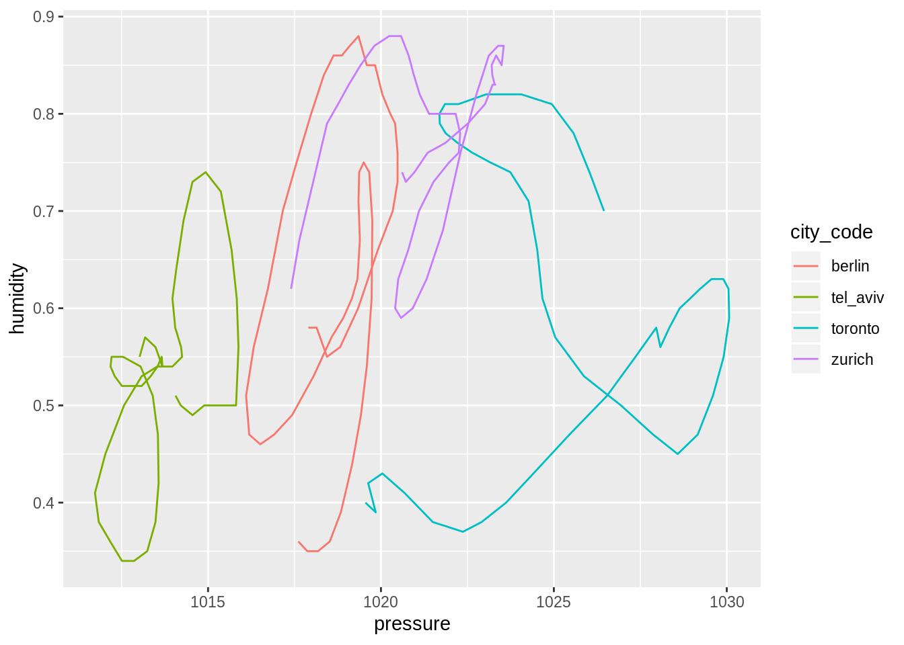
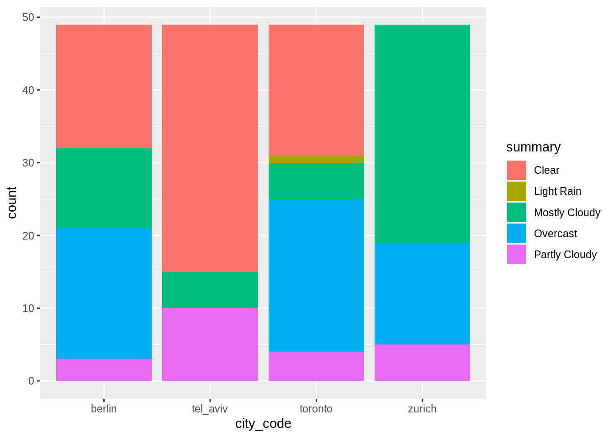
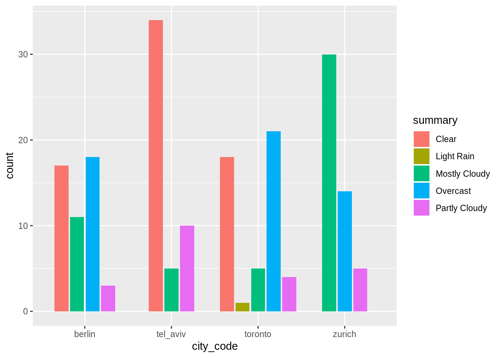
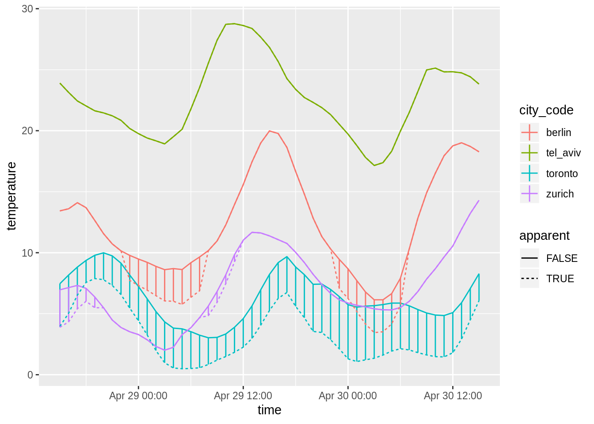
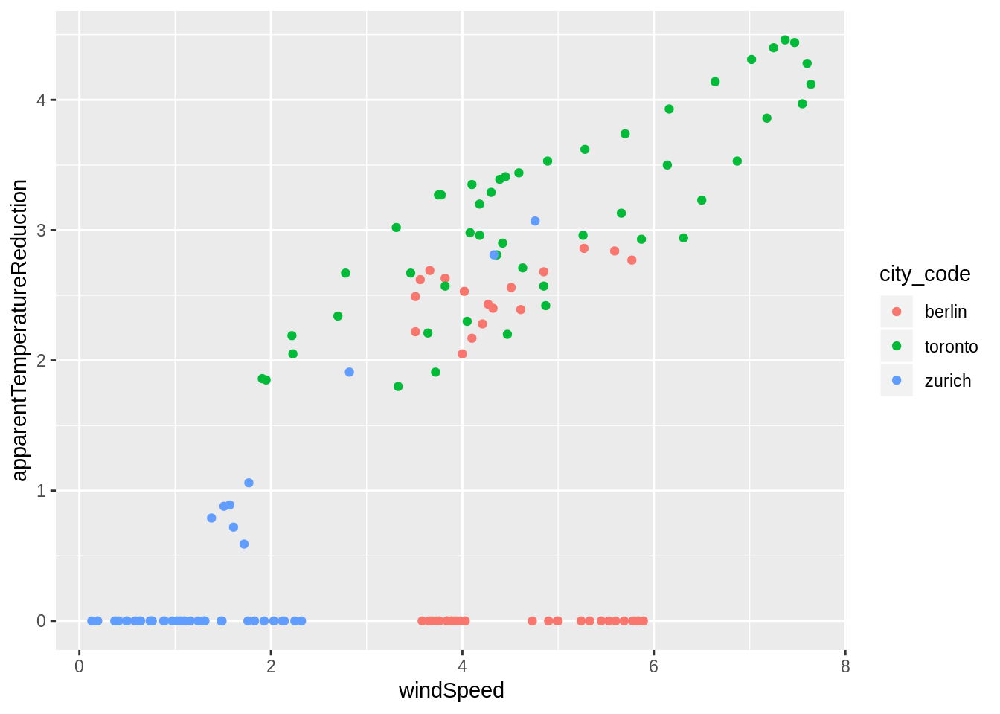

1 Introduction
The tidyverse has quickly developed over the last years.
Its first implementation as a collection of partly older packages was in the second half of 2016.
All its packages “share an underlying design philosophy, grammar, and data structures.”1
It is for sure difficult to tell, if “learning the tidyverse” is a hard task, since the result of this assessment might differ from person to person.
We do believe though, that there are concepts in its approach, which – when grasped – have the potential to increase one’s productivity, since code creation will seem more natural.
While this might be true for all languages (once you speak it well enough, things go smoothly), in our opinion the tidyverse worth exploring in depth, since it is
- consistent: an especially well designed framework that aims at making data analysis and programming intuitive,
- evolving: constantly deepened understanding for challenges arising in modern data analysis leads to improving ergonomic user interfaces.
This section gives a brief overview, introduces the data used for the course, and offers a refresher for tidy data manipulation and visualization.
1.1 Overview
This course covers several topics, which everyone working more intently with the tidyverse almost inevitably needs to deal with at some point or another.
The topics are organized in chapters that contain mostly R code with output and text.
In each section, exercises are provided.
Each subsection corresponds to an R script in the script directory in the sister repository on GitHub.
For example, the code from the next section 1.2 can be found in 12-intro.R.
Clone or download the repository and open the R-workshop.Rproj file to run the script.
(It is important to open the .Rproj file and not only the .R scripts.)
1.1.0.0.1 Function basics
structuring the code to avoid too much copy-pasting
Using functions to structure code. This part is independent of the subsequent section.
- We begin with how to define and execute a function
- Discussion of a function’s arguments (from both the developers’ and the users’ perspective)
- A few words on function design
1.1.0.0.2 Simple iteration
processing multiple files that contain different parts of the same dataset
This part introduces iteration and is independent of the previous section.
- How to get from a list or a vector to a tibble and vice-versa
- Indexing for vectors and lists
- Applying a function to each element of a list or a vector
1.1.0.0.3 Pairwise iteration and nesting
More advanced iteration.
- Simultaneously feed two or more separate lists of inputs into a function working with those two arguments
- Iterate rowwise through columns in a tibble
- Nested tibbles, a very powerful concept
1.1.0.0.4 Scoping and flow control
More advanced functional concepts.
- Data lifecycle
- Purity
- Control flow
- Metaprogramming
1.1.0.0.5 Non-rectangular data
working with raw data from online services (JSON)
Processing hierarchical lists as commonly returned from web APIs.
- Data lifecycle
- Purity
- Control flow
- Metaprogramming
1.1.0.0.6 Tidy evaluation
writing functions that work with datasets of different shape
TBD
1.2 Review of visualization and data transformation
This section is a refresher for visualization and data transformation in the tidyverse. Readers familiar with the first half or R for data science will recognize the concepts repeated here. The data used throughout this course is presented, plotted and briefly analyzed.
The code in each chapter is self-contained. The code in each section is also self-contained, but the necessary setup code is hidden and can be expanded with a click. We will always load the following packages:
library(tidyverse)
library(here)Functions from other packages may be used with the :: notation.
1.2.1 Data
We will be working with hourly measurements of weather data (link to data documentation) in four cities (Berlin, Toronto, Tel Aviv and Zurich) between 2019-04-28, 3pm and 2019-04-30, 3pm. Thus we have 49 observations in each city. Variables are:
timesummary(how to describe the weather in one word)icon(mix of description of weather plus time of day)precipIntensity(intensity of precipitation [mm/h])precipProbabilitytemperatureapparentTemperaturedewPointhumiditypressurewindSpeedwindGustwindBearing(direction in degrees)cloudCoveruvIndexvisibilityozoneprecipType
Reading in the data, which is stored in MS Excel-Files:
berlin <- readxl::read_excel(here("data/weather", "berlin.xlsx"))
toronto <- readxl::read_excel(here("data/weather", "toronto.xlsx"))
tel_aviv <- readxl::read_excel(here("data/weather", "tel_aviv.xlsx"))
zurich <- readxl::read_excel(here("data/weather", "zurich.xlsx"))Create one larger tibble from the four smaller ones:
weather_data <- bind_rows(
berlin = berlin,
toronto = toronto,
tel_aviv = tel_aviv,
zurich = zurich,
.id = "city_code"
)1.2.2 Exploration
weather_data## # A tibble: 196 x 19
## city_code time summary icon precipIntensity
## <chr> <dttm> <chr> <chr> <dbl>
## 1 berlin 2019-04-28 15:00:00 Mostly… part… 0
## 2 berlin 2019-04-28 16:00:00 Mostly… part… 0
## 3 berlin 2019-04-28 17:00:00 Mostly… part… 0
## # … with 193 more rows, and 14 more variables: precipProbability <dbl>,
## # temperature <dbl>, apparentTemperature <dbl>, dewPoint <dbl>,
## # humidity <dbl>, pressure <dbl>, windSpeed <dbl>, windGust <dbl>,
## # windBearing <dbl>, cloudCover <dbl>, uvIndex <dbl>, visibility <dbl>,
## # ozone <dbl>, precipType <chr>
Example plot of humidity vs. pressure (geom_path() ensures that points are connected according to their order in the tibble):
weather_data %>%
ggplot(aes(x = pressure, y = humidity, color = city_code)) +
geom_path()
Barplots of number of occurences of each kind of weather per city:
weather_data %>%
ggplot(aes(x = city_code)) +
geom_bar(aes(fill = summary))
weather_data %>%
ggplot(aes(x = city_code)) +
geom_bar(aes(fill = summary), position = position_dodge2("dodge", preserve = "single"))
Lineplot with different line types and an additional visualisation of the line range (here, difference between apparent and actual temperature):
temperature_data <-
weather_data %>%
select(city_code, time, temperature, apparentTemperature) %>%
gather(kind, temperature, -city_code, -time) %>%
mutate(apparent = (kind == "apparentTemperature")) %>%
select(-kind)
temperature_data %>%
ggplot(aes(x = time, color = city_code)) +
geom_linerange(data = weather_data, aes(ymin = temperature, ymax = apparentTemperature)) +
geom_line(aes(linetype = apparent, y = temperature))
Relation of temperature difference between actual and apparent temperature (cf. line range in last plot) with wind speed, shown as scatter plot.
weather_data %>%
mutate(apparentTemperatureReduction = temperature - apparentTemperature) %>%
filter(city_code != "tel_aviv") %>%
ggplot(aes(x = windSpeed, y = apparentTemperatureReduction)) +
geom_point(aes(color = city_code))
1.2.3 Further dplyr transformations
If you want to compare measurements of the same observable at two different points in time, maybe the most straightforward way to do so is to create a new column with an appropriate lag:
weather_data %>%
group_by(city_code) %>%
mutate_at(vars(temperature, pressure, humidity), list(lag = lag)) %>%
ungroup()## # A tibble: 196 x 22
## city_code time summary icon precipIntensity
## <chr> <dttm> <chr> <chr> <dbl>
## 1 berlin 2019-04-28 15:00:00 Mostly… part… 0
## 2 berlin 2019-04-28 16:00:00 Mostly… part… 0
## 3 berlin 2019-04-28 17:00:00 Mostly… part… 0
## # … with 193 more rows, and 17 more variables: precipProbability <dbl>,
## # temperature <dbl>, apparentTemperature <dbl>, dewPoint <dbl>,
## # humidity <dbl>, pressure <dbl>, windSpeed <dbl>, windGust <dbl>,
## # windBearing <dbl>, cloudCover <dbl>, uvIndex <dbl>, visibility <dbl>,
## # ozone <dbl>, precipType <chr>, temperature_lag <dbl>,
## # pressure_lag <dbl>, humidity_lag <dbl>
Count observations per category or combinations of categories:
weather_data %>%
count(city_code)## # A tibble: 4 x 2
## city_code n
## <chr> <int>
## 1 berlin 49
## 2 tel_aviv 49
## 3 toronto 49
## 4 zurich 49
weather_data %>%
count(city_code, summary)## # A tibble: 15 x 3
## city_code summary n
## <chr> <chr> <int>
## 1 berlin Clear 17
## 2 berlin Mostly Cloudy 11
## 3 berlin Overcast 18
## # … with 12 more rows
Use summarize() to create a tibble with mean and maximum temperature for each city:
weather_data %>%
group_by(city_code) %>%
summarize(temperature_mean = mean(temperature), temperature_max = max(temperature)) %>%
ungroup()## # A tibble: 4 x 3
## city_code temperature_mean temperature_max
## <chr> <dbl> <dbl>
## 1 berlin 12.5 20.0
## 2 tel_aviv 22.6 28.8
## 3 toronto 6.39 9.99
## 4 zurich 7.15 14.3
Compute and display summary data for all numeric variables:
weather_data %>%
group_by(city_code) %>%
summarize_if(is.numeric, list(mean = mean, sd = sd, min = min, max = max)) %>%
ungroup() %>%
gather(key, value, -city_code) %>%
separate(key, into = c("indicator", "fun")) %>%
xtabs(value ~ city_code + indicator + fun, .) %>%
ftable()## fun max mean min sd
## city_code indicator
## berlin apparentTemperature 19.98000000 11.62836735 3.45000000 5.07360997
## cloudCover 1.00000000 0.59734694 0.00000000 0.42339292
## dewPoint 10.18000000 5.23632653 1.88000000 2.45837742
## humidity 0.88000000 0.63448980 0.35000000 0.15571156
## ozone 378.04000000 343.34571429 319.68000000 21.60874350
## precipIntensity 0.34800000 0.03084286 0.00000000 0.07902264
## precipProbability 0.54000000 0.06000000 0.00000000 0.13913423
## pressure 1020.48000000 1018.71714286 1016.10000000 1.19202733
## temperature 19.98000000 12.49795918 6.14000000 4.10004115
## uvIndex 5.00000000 1.24489796 0.00000000 1.61413821
## visibility 16.09000000 15.77102041 10.01000000 1.13380672
## windBearing 358.00000000 151.59183673 4.00000000 152.79205891
## windGust 11.14000000 7.59591837 3.67000000 2.18713275
## windSpeed 5.89000000 4.49326531 3.51000000 0.81341458
## tel_aviv apparentTemperature 28.77000000 22.64591837 17.15000000 3.15235885
## cloudCover 0.81000000 0.19693878 0.00000000 0.24908335
## dewPoint 14.43000000 12.18244898 9.51000000 1.29219376
## humidity 0.74000000 0.52612245 0.34000000 0.09347050
## ozone 339.37000000 318.31836735 307.16000000 10.05895835
## precipIntensity 0.00000000 0.00000000 0.00000000 0.00000000
## precipProbability 0.00000000 0.00000000 0.00000000 0.00000000
## pressure 1015.88000000 1013.66265306 1011.73000000 1.12583076
## temperature 28.77000000 22.64591837 17.15000000 3.15235885
## uvIndex 10.00000000 2.40816327 0.00000000 3.56439784
## visibility 16.09000000 15.87163265 10.01000000 1.07987528
## windBearing 355.00000000 188.36734694 0.00000000 123.84965581
## windGust 5.53000000 3.47775510 1.66000000 1.19411101
## windSpeed 4.90000000 2.49285714 0.57000000 1.04899754
## toronto apparentTemperature 7.88000000 3.27306122 0.49000000 2.24842464
## cloudCover 1.00000000 0.59510204 0.00000000 0.43183293
## dewPoint 3.05000000 -1.26653061 -5.17000000 2.69193359
## humidity 0.82000000 0.59734694 0.37000000 0.14628419
## ozone 401.89000000 362.02632653 327.57000000 23.42483179
## precipIntensity 0.84070000 0.08387551 0.00000000 0.16627247
## precipProbability 0.51000000 0.06653061 0.00000000 0.11739447
## pressure 1030.07000000 1025.14918367 1019.55000000 3.22083053
## temperature 9.99000000 6.38795918 3.03000000 2.02387621
## uvIndex 6.00000000 1.40816327 0.00000000 1.84750245
## visibility 16.09000000 15.14673469 5.13000000 2.83815256
## windBearing 357.00000000 140.32653061 2.00000000 129.30831820
## windGust 11.51000000 7.51020408 2.66000000 2.33711939
## windSpeed 7.64000000 4.87510204 1.91000000 1.62389080
## zurich apparentTemperature 14.30000000 6.88551020 2.01000000 3.14469133
## cloudCover 1.00000000 0.80877551 0.37000000 0.15734295
## dewPoint 7.23000000 3.38367347 -0.27000000 1.90397030
## humidity 0.88000000 0.77551020 0.59000000 0.08304269
## ozone 377.57000000 359.81510204 340.69000000 11.33226737
## precipIntensity 0.26670000 0.07106939 0.00000000 0.05976032
## precipProbability 0.29000000 0.13326531 0.00000000 0.07816616
## pressure 1023.55000000 1021.37612245 1017.40000000 1.62120174
## temperature 14.30000000 7.14510204 2.01000000 3.07049475
## uvIndex 4.00000000 1.10204082 0.00000000 1.44690615
## visibility 16.09000000 12.90938776 3.89000000 4.47872769
## windBearing 357.00000000 147.61224490 20.00000000 102.66182679
## windGust 4.76000000 1.98428571 1.07000000 0.95327506
## windSpeed 4.76000000 1.31244898 0.13000000 0.91823774citation from tidyverse homepage↩